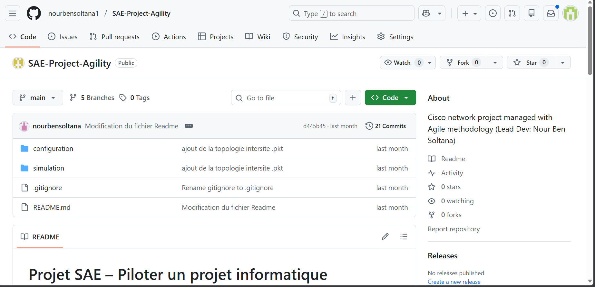
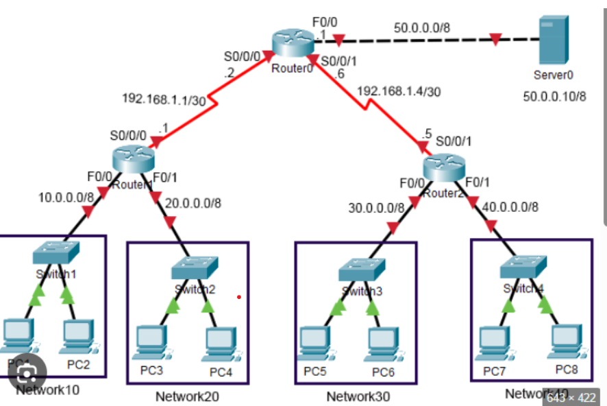

Responsable de projet informatique junior
Novembre 2025
Contexte
Projet académique de pilotage et d’organisation d’un projet informatique
orienté réseaux et systèmes.
Rôle
Organisation des tâches, gestion des versions et suivi du projet.
Missions réalisées
- Planification et répartition des tâches
- Gestion de versions avec Git / GitHub
- Administration et sauvegarde des configurations réseaux
- Rédaction de documentation technique
Illustrations


Voir le projet
📄 Documentation PDF
← Retour